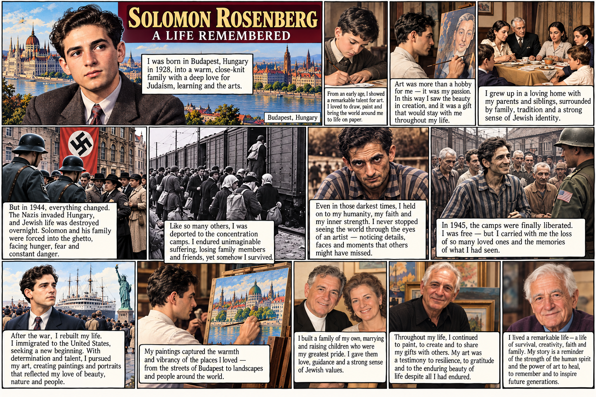
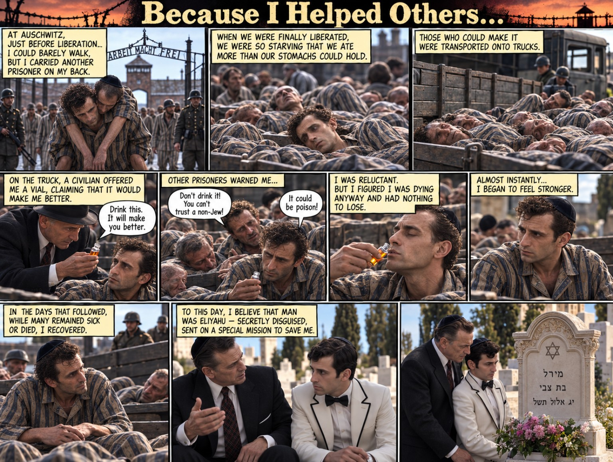

The Conspiracy Department
The Conspiracy DepartmentIntroduction and Episodes 1–10: fantasy, investigation and evidence challenge conspiracy thinking.
Read the complete series → Explore the stories
Explore the stories
Comics · Holocaust testimony · historical education
The Conspiracy DepartmentIntroduction and Episodes 1–10: fantasy, investigation and evidence challenge conspiracy thinking.
Read the complete series →
A mystical protagonist confronts prejudice through extraordinary encounters.
Read the story →
A time-traveler collection testing hateful claims against history.
Read the story →
A life remembered through illustrated testimony.
Read the story →
A Holocaust story about survival and what follows liberation.
Read the story →
A survival story of compassion, liberation and recovery.
View the full comic →Swipe or scroll sideways to explore every project.